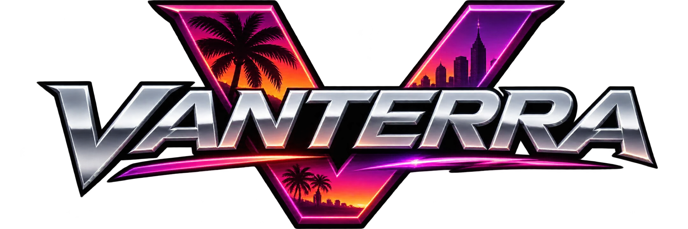

🌆
Атмосфера большого города
Неоновые огни, улицы и настроение ночного мегаполиса.

VANTERRA — разрабатываемая игра в духе GTA с открытым миром, городской атмосферой и свободой действий. Создаётся на игровом движке Godot.
Узнать большеVANTERRA — независимый игровой проект, вдохновлённый играми серии GTA. Цель проекта — создать собственный мир, в котором можно исследовать город и находить приключения. Игра находится в разработке.
Неоновые огни, улицы и настроение ночного мегаполиса.
Идея игры основана на свободе исследования открытого мира.
Авторский проект, который постепенно развивается и дополняется.
VANTERRA разрабатывается на Godot Engine — игровом движке с открытым исходным кодом, который позволяет создавать 2D- и 3D-игры. Это независимый проект, не связанный с Rockstar Games.
Мир VANTERRA только начинается. Впереди — новые идеи, обновления и возможности.
Наверх ↑